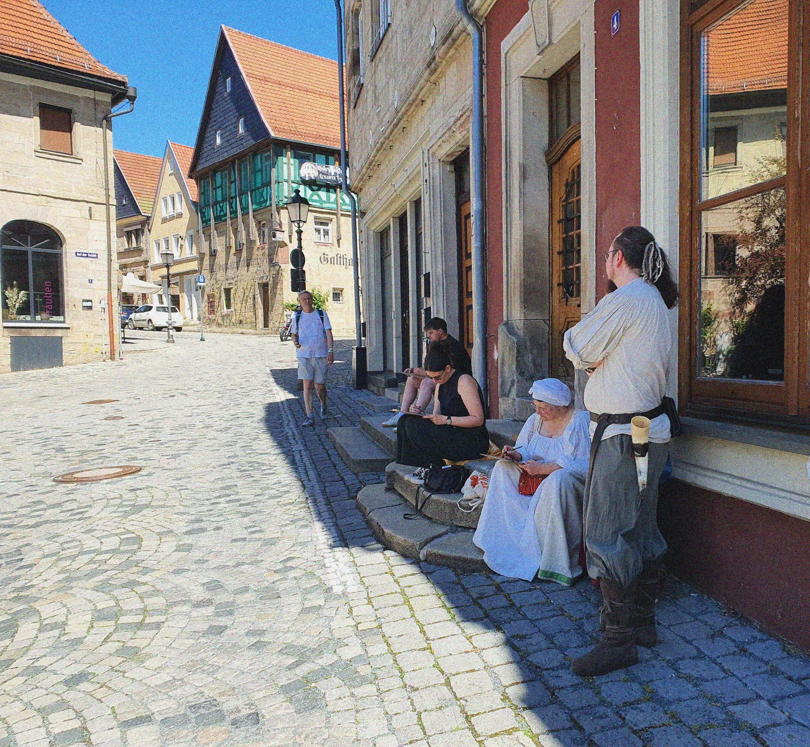
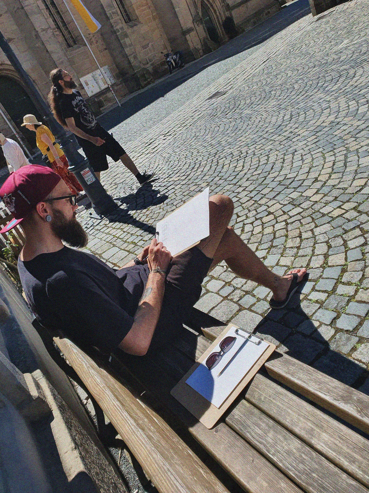
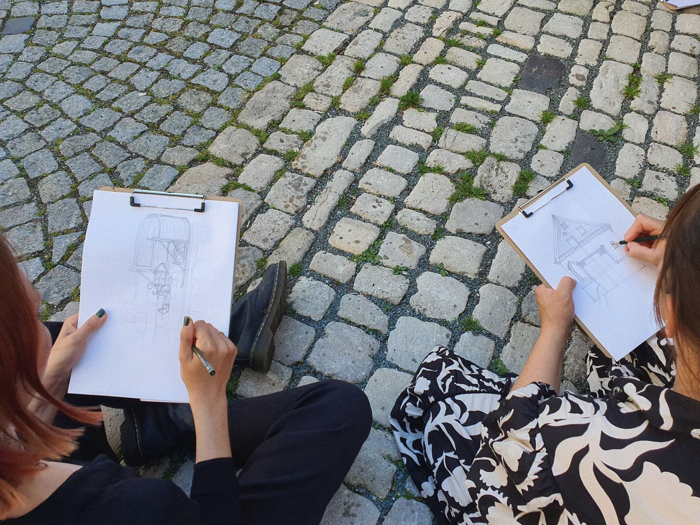
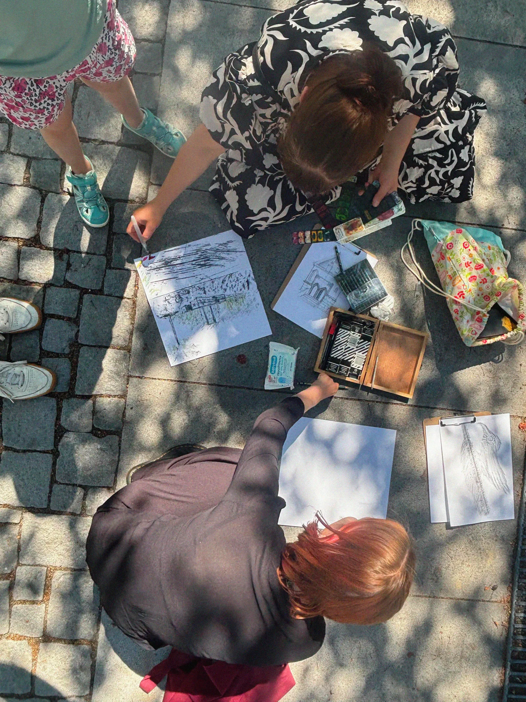
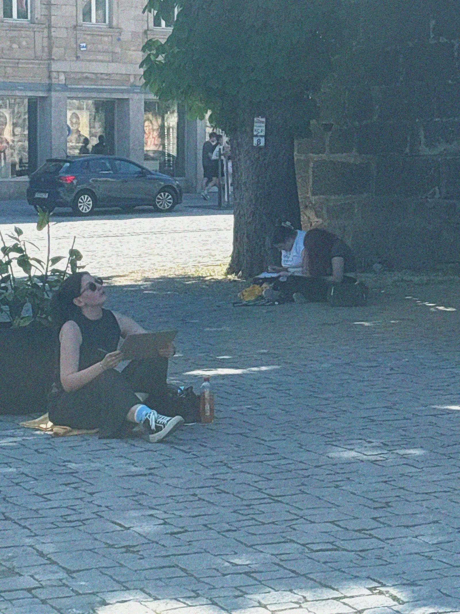
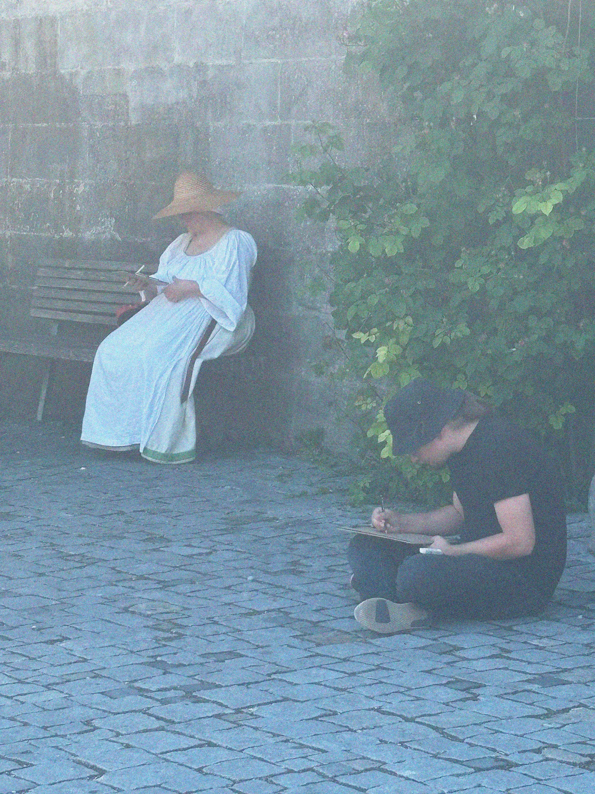

Urban
Sketching
Grooonich II
23. Mai 2026 · OpenArtGroup
Unser Urban Sketching ging am Samstag in die zweite Runde. Mit bekannten und neuen Gesichtern zogen wir wieder durch die Kronacher Altstadt auf der Suche nach Inspiration, Faszination und neuen Motiven.

Was war diesmal anders?
Der Kern blieb derselbe. Es ging immer noch darum, die unmittelbare Umgebung direkt vor Ort zu zeichnen. Die Teilnehmenden haben aber schnell gezeigt, was Urban Sketching so faszinierend macht. An denselben Plätzen entstanden völlig neue Werke. Neue Perspektiven wurden eingenommen, neue Foki gesetzt. Selbst Teilnehmende, die uns bereits beim letzten Urban Sketching begleiteten, entdeckten ganz neue Seiten der Stadt.
Treffpunkt war wieder der Melchior-Otto-Platz
Am Samstag, dem 23. Mai 2026, trafen wir uns wieder um 14:00 Uhr am Melchior-Otto-Platz in Kronach. Von dort passten wir unsere Route an und machten uns auf den Weg zum Marienplatz unterhalb der alten Stadtmauer. Papier, Stifte und Klemmbrett wurde dabei wieder von uns gestellt.
Das Treffen war wieder offen und kostenlos. Ob man schon mal gezeichnet hatte oder zum ersten Mal einen Stift in die Hand nahm: Alle waren willkommen. Es gab keine Aufgabe, kein Ziel, keinen Wettbewerb — nur einen weiteren Nachmittag voll mit Entspannung, Austausch und Zeichnen.
Impressionen





